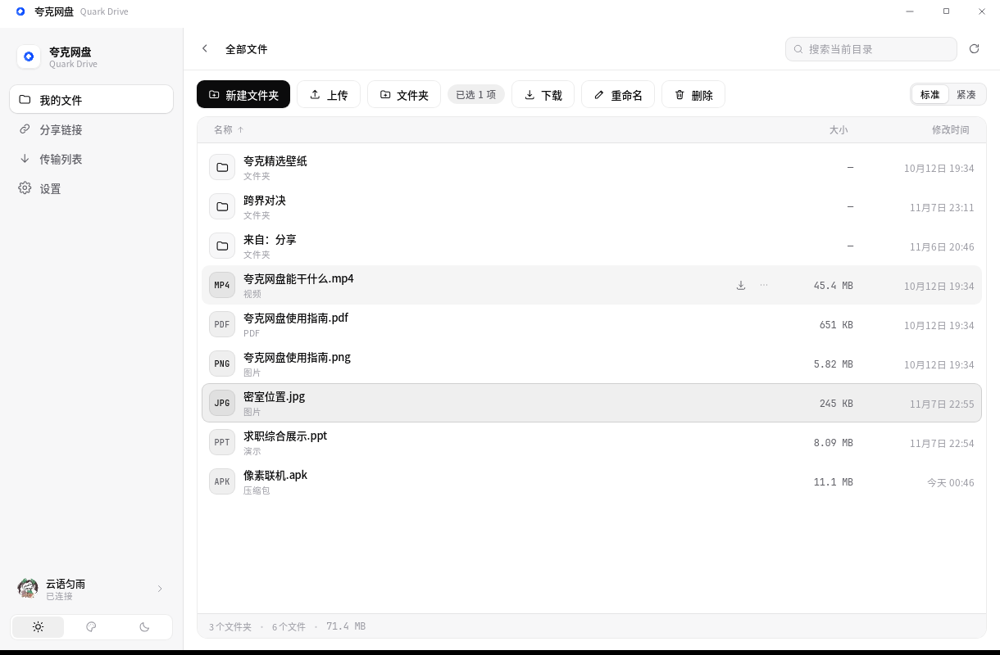

五盘合一
侧边栏切换网盘，登录状态、容量条、文件列表互相独立。 每个盘有独立的头像与昵称，左下角账号区跟着当前网盘走。
已支持

文件列表 多级目录、全盘搜索、网格 / 紧凑两种密度、右键菜单与多选。
每个网盘的登录方式、接口形状、能力边界都不一样。 这里做的事是把它们抹平成同一套交互——不一致的地方就诚实地灰掉。
侧边栏切换网盘，登录状态、容量条、文件列表互相独立。 每个盘有独立的头像与昵称，左下角账号区跟着当前网盘走。
浅色 / 深色两套设计令牌，可跟随系统自动切换，原生窗口装饰也同步换色。
跟随系统不靠 prefers-color-scheme——WebKitGTK 在 KDE / Wayland
下常把它解析成浅色，所以由 Rust 侧直接读桌面配色。
不逐目录爬树，因此深层目录也能搜到。命中项显示所在文件夹，可直接定位。
各盘分别走自己的 /search 接口。
面包屑、排序（记忆上次选择）、网格 / 紧凑、多选（Shift / Ctrl / Ctrl+A / ↑↓）、 右键菜单、新建文件夹、重命名、删除、移动、复制。 当前网盘不具备的操作会提前灰掉，而不是选完目标目录才报错。
拖拽上传、整个文件夹递归上传 / 下载、同名自动追加序号或跳过、秒传识别、 并发数可调、取消 / 重试 / 清理、断点续传，以及上传下载共享的全局速度上限。
夸克与阿里云盘按文件大小自适应开几百条连接，各取一段区间， 谁先完成谁再领新片。慢连接会被判定后换新连接，直链过期自动重新取链， 断点续传按原分片计划接着下。传输列表实时显示连接数与分片进度。
夸克、移动、阿里、123、百度五个盘支持：粘贴链接即可预览、逐级浏览子目录、批量转存到自己网盘或下载到本地。
还支持系统深链 yunyu-drive://share?url=…。
四个盘可建可撤（139 除外），可选名称、有效期与 4 位提取码。 「我的分享」列出已建分享的链接、提取码、到期时间与浏览 / 转存 / 下载次数。
列表只挂载前 200 行，滚到底部再续 200，状态栏显示「已显示 N / M」。 网格模式对图片与视频显示真实缩略图，由后端带 Referer 下载后内联。
登录凭据写在 ~/.config/yunyu-drive/，权限 0600，
不经过任何中转服务器。头像也缓存在本地，第二次启动不再联网。
目标盘可以和源盘不同——弹窗顶部就能切换目标网盘。 服务端没有跨盘原语，所以任务会先把文件下载到本机缓存，再上传到目标盘； 整批选择合成一个任务，在传输列表里显示为「跨盘复制 / 跨盘移动」。
三平台安装包由 GitHub Actions 从同一个提交构建， 版本号一致。安装包只有几 MB——Tauri 复用系统的 WebView，不额外打包浏览器内核。
macOS 包默认是 ad-hoc 签名、未公证，首次打开需要右键 →「打开」。
Linux 需要 libwebkit2gtk-4.1、libgtk-3-0、
libayatana-appindicator3-1，deb / rpm 会自动拉依赖。
装好之后深链可用：
xdg-open "yunyu-drive://share?url=…"
前端 Vue 3 + TypeScript，后端 Rust。依赖两个上游 crate，
以源码形式放在仓库的 vendor/ 下，因此单独拷走仓库就能编译。
Rust 1.88+、Node 20+、pnpm 12；Linux 上另需
libwebkit2gtk-4.1-dev、libgtk-3-dev、
libsoup-3.0-dev、libayatana-appindicator3-dev。
# 装依赖并起开发环境 pnpm install pnpm tauri dev # 打当前平台的安装包 pnpm build:linux # deb + rpm pnpm build:windows # NSIS exe pnpm build:mac # universal dmg
没有登录凭据时可以脱离 Tauri 预览全部界面。mock 数据通过 Vite 别名注入， 不会被编进正式包。
VITE_MOCK=1 pnpm dev # http://localhost:5183/?view=files&theme=dark # view=files|transfers|settings|login|share|myShares|recycle
版本号只有一个真源（package.json），推 tag 即三平台并行构建并发布。
pnpm version:set 0.2.0 git commit -am "chore: 0.2.0" git tag v0.2.0 && git push origin v0.2.0